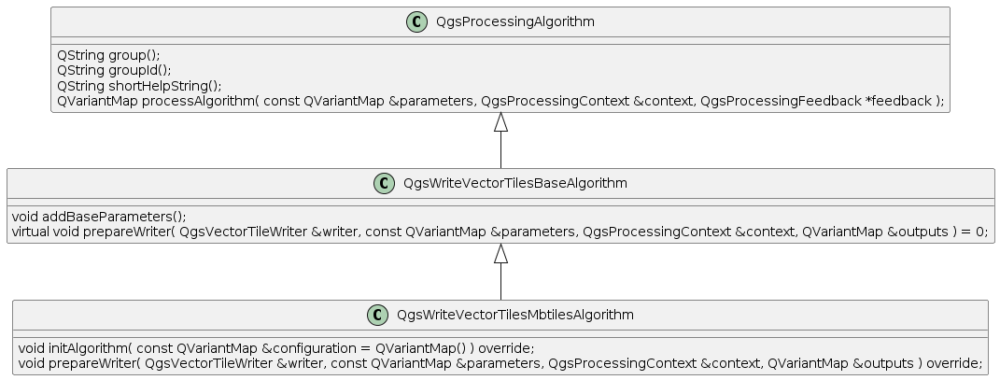

Table of Contents
1 QGIS 算法批处理原理
1.1 UML类图

1.2 核心方法分析
/**
- Runs the algorithm using the specified \a parameters. Algorithms should implement
- their custom processing logic here.
- The \a context argument gives a temporary context with thread affinity matching the thread
- in which the algorithm is being run. This is a cut-back copy of the context passed to
- the prepareAlgorithm() and postProcessAlgorithm() steps, but it is generally safe
- for most algorithms to utilize this context for loading layers and creating sinks.
- Any loaded layers or sinks created within this temporary context will be transferred
- back to the main execution context upon successful completion of the processAlgorithm()
- step.
- Algorithm progress should be reported using the supplied \a feedback object. Additionally,
- well-behaved algorithms should periodically check \a feedback to determine whether the
- algorithm should be canceled and exited early.
- This method will not be called if the prepareAlgorithm() step failed (returned FALSE).
- Implementations of processAlgorithm can throw the QgsProcessingException exception
- to indicate that a fatal error occurred within the execution.
- \returns A map of algorithm outputs. These may be output layer references, or calculated
- values such as statistical calculations. Unless the algorithm subclass overrides
- the postProcessAlgorithm() step this returned map will be used as the output for the
- algorithm.
- \see prepareAlgorithm()
- \see postProcessAlgorithm()
*/
\(virtual QVariantMap processAlgorithm( const QVariantMap ¶meters, QgsProcessingContext &context, QgsProcessingFeedback *feedback ) SIP_THROW( QgsProcessingException ) = 0 SIP_VIRTUALERRORHANDLER( processing_exception_handler );\)
上面的一段解释主要是三点：
- 提供一个临时的拷贝到线程内部的上下文环境，并将结果数据通知给主进程
- 定时检测并反馈是否需要取消和推出进程
- 结果作为返回值， 重写postProcessAlgorithm()来实现自定义返回值
1.3 基类源码分析
- QgsWriteVectorTilesBaseAlgorithm::addBaseParameters() 此函数里面就是将默认瓦片需要裁减的基本参数给初始值，如最小最大级别，裁减范围等
QVariantMap QgsWriteVectorTilesBaseAlgorithm::processAlgorithm
QVariantMap QgsWriteVectorTilesBaseAlgorithm::processAlgorithm( const QVariantMap ¶meters, QgsProcessingContext &context, QgsProcessingFeedback *feedback ) { const int minZoom = parameterAsInt( parameters, QStringLiteral( "MIN_ZOOM" ), context ); const int maxZoom = parameterAsInt( parameters, QStringLiteral( "MAX_ZOOM" ), context ); const QVariant layersVariant = parameters.value( parameterDefinition( QStringLiteral( "LAYERS" ) )->name() ); const QList<QgsVectorTileWriter::Layer> layers = QgsProcessingParameterVectorTileWriterLayers::parameterAsLayers( layersVariant, context ); for ( const QgsVectorTileWriter::Layer &layer : layers ) { if ( !layer.layer() ) throw QgsProcessingException( QObject::tr( "Unknown input layer" ) ); } QgsVectorTileWriter writer; QVariantMap outputs; prepareWriter( writer, parameters, context, outputs ); writer.setMinZoom( minZoom ); writer.setMaxZoom( maxZoom ); writer.setLayers( layers ); writer.setTransformContext( context.transformContext() ); if ( parameters.contains( QStringLiteral( "EXTENT" ) ) ) { const QgsRectangle extent = parameterAsExtent( parameters, QStringLiteral( "EXTENT" ), context, QgsCoordinateReferenceSystem( "EPSG:3857" ) ); writer.setExtent( extent ); } const bool res = writer.writeTiles( feedback ); if ( !res ) throw QgsProcessingException( QObject::tr( "Failed to write vector tiles: " ) + writer.errorMessage() ); return outputs; }